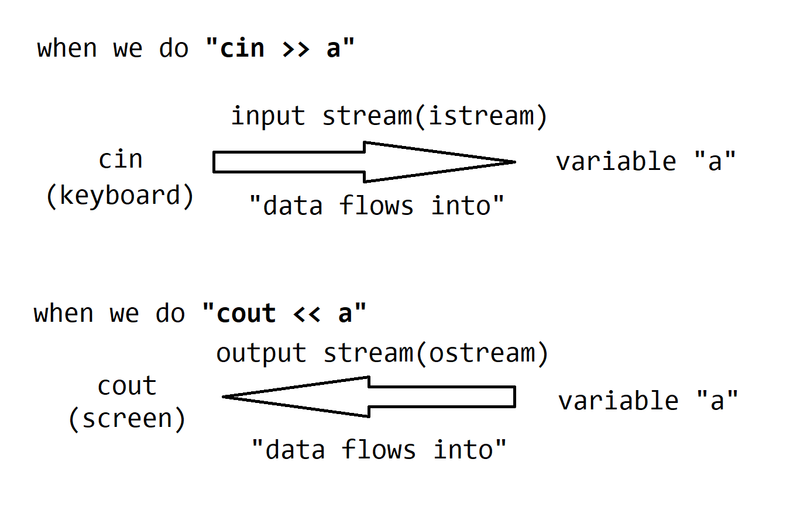

COMP2011 Lab 5
Introduction
In this lab, you are going to implement a deciphering system, which is to decrypt a piece of message encrypted by Caesar cipher(or shift cipher). The lab material mainly covers two self-study parts: C++ File I/O and C++ String. Please make sure you have already read through the two sets of slides before working on this lab.
Here are some notes that are useful in this lab.
-
A stream in C++ is a sequence of characters. You have already used
cin >> ato receive input from keyboard andcout << ato print message onto screen. You may vividly think they are "streams" in real life: considercinis your keyboard, thencin >> ais like a "stream" flows from your keyboard into a variablea, the>>indicates the direction of stream; similarly, considercoutis your screen, thencout << ais like a "stream" flows from variableainto your screen, so it displays the value ofaand<<also indicates the direction of stream.
-
To read data from a file, we can create an input (file) stream, say
ifs, and runifs >> a, to read a value from a file and store it into a variablea. Similarly, to output data into a file, we can create an output (file) stream, sayofs, and runofs << a. -
cerris standard(console) error output, it will (usually) display message on your screen. From now on, when you output error messages, you should usecerrinstead ofcout. However, since it is difficult to observe the differences betweencerrandcoutin vscode. We do not contain this as a task.
Description
In cryptography, a Caesar cipher, also known as shift cipher,(which you may have learnt in COMP 2711 or COMP 2711H) is one of the simplest and most widely known encryption techniques, in which each letter in the plaintext (i.e., original message) is replaced by a letter some fixed number of positions down the alphabet.
For example, shifting each letter by 3 positions will result in:
| Plain | A | B | C | D | E | F | G | H | I | J | K | L | M | N | O | P | Q | R | S | T | U | V | W | X | Y | Z |
|---|---|---|---|---|---|---|---|---|---|---|---|---|---|---|---|---|---|---|---|---|---|---|---|---|---|---|
| Cipher | X | Y | Z | A | B | C | D | E | F | G | H | I | J | K | L | M | N | O | P | Q | R | S | T | U | V | W |

which means to encrypt the message, we substitute all "A" to be "X", all "B" to be "Y", etc.
When encrypting, we look up each letter of the message in the "plain" line and writes down the corresponding letter in the "cipher" line.
Plaintext: THE QUICK BROWN FOX JUMPS OVER THE LAZY DOG
Ciphertext: QEB NRFZH YOLTK CLU GRJMP LSBO QEB IXWV ALD
To obtain ciphertext, we can do (x + shift) % 26, where x is the letter in the plaintext, and shift is the number of positions we want to shift.
In this example, shift = -3, you may also view it as shift = 23.
However, in this lab, "ciphertext" is given, and we expect you to find the correct "plaintext". To make things interesting, we won't give you how many number of shifts did we use while encrypting. You need to try all possible shifts (hint: only need to try 0~25), and check if any shift makes all words in the message meaningful. We have prepared a wordlist for you, so you only need to check if the words appear in wordlist to determine whether it is meaningful or not.
Tasks
There are 5 tasks in total. Some resources are provided here, you can find a skeleton file "lab5_skeleton.cpp", a wordlist "wordlist.txt", and a demo input "encrypted.txt".
Detailed descriptions of tasks are provided below, you may also find similar instructions in the comments of skeleton file.
Task 0 (given as a reference, don't need to do anything)
bool read_word_list()
This function reads words from the given wordlist in file "wordlist.txt" and store them in a string array. It returns true if successfully loaded, false otherwise.
This function is a demo for using input file stream, and is already implemented. You should not modify it.
Task 1
bool is_in_list(string word)
This function checks if the word given appears in the wordlist, return true if the word is in the wordlist, false otherwise.
Task 2
bool is_all_in_list(string word[], int length)
This function checks if ALL the words in the string array are in the wordlist, and return true if ALL words are in the wordlist, false otherwise.
You should use is_in_list(string word) implemented in Task 1 as a helper function.
Notice: Since this task depends on Task 1 and we only check the result during lab demo, you can receive partical credit if your result is wrong but either one of Task 1 and Task 2 is correct.
Task 3
bool read_encrypted_messages(string encrypted[], int &message_len)
Read encrypted messages from file "encrypted.txt" and store it in the string array "encrypted[]", and also store its length in "message_len". It returns true if successfully loaded, and false otherwise.
This task is similar to Task 0. However, there may contain extra spaces or newlines in "encrypted.txt"(as shown below), and we don't give the length of message. You need to figure it out by yourself.
A demo of "encrypted.txt": (This file can only contain lower case alphabets and extra spaces/newlines)
ie qcqpydw jxqj oek
secfbuju jxu
bqr rubyulu yd oekhiubv yi jxu
iushuj
ev
ikssuii
Hint: Do you remember cin can skip extra spaces while reading input? Do you think input file stream can do similar things?
Task 4
bool find_valid_shift(string encrypted[], int message_len, string decrypted[])
This function tries all possible shifts from 0 to 25, and check if any shift makes the decrypted message(plaintext) valid (i.e., all words in the decrypted message are in the wordlist). If any shift makes the message valid, it returns true, and the decrypted message is stored in the string array decrypted[], otherwise it returns false and the array decrypted[] is meaningless. (i.e., we don't care about the value in the array)
The "encrypted.txt" file should only contain lower case alphabets and extra spaces/newlines, you don't need to consider cases when there is (1) capital letters, (2) numbers, (3) symbols, and so on.
Task 5
bool store_decrypted_messages(string decrypted[], int message_len)
This function stores decrypted message(given in the string array decrypted[]) into file "decrypted.txt". Each word in the message should be followed by a space. If the file cannot be opened, it returns false, otherwise, returns true.
This function is similar to Task 0, but you should use output file stream instead.
Expected Output
Below is a sample run of the program with the main function in the skeleton codes and "encrypted.txt" given in the skeleton package.
Your program should output:
Successfully decrypted the message!
There should be a new file "decrypted.txt" generated by your program, which contains:
so amazing that you complete the lab believe in yourself is the secret of success
Grading Scheme
Each lab carries 3 points in total.
- By attending a lab, the student gets 1 point for attendance (but only if it is clear that the student does put in some effort).
- By completing the lab exercise correctly and answering TAs' question (if there is a question) correctly, the student gets the remaining 2 more points.
- You are recommended to turn on the camera while demonstrating.